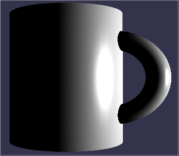

Babylon.js propose, comme déjà indiqué, plusieurs autres mesh, voici les méthodes qui vous permettront d'afficher ces autres mesh :
Pour créer une boite
BABYLON.Mesh.CreateBox(nom, taille, scene);
Pour créer une sphère
BABYLON.Mesh.CreateSphere(nom,détail,taille,scene);
Pour créer un cylindre
BABYLON.Mesh.CreateCylinder(nom, hauteur, diamètre haut, diamètre bas, détail, scene, modifiable); //possibilité de faire un cône
Pour créer un plan
BABYLON.Mesh.CreatePlane(nom, taille, scene);
Tout ce que nous avons vu pour le tore (position, rotation et scale) est valable pour ces autres meshes.
Créer un nouvel exemple (app_03)
script.js
var canvas = document.getElementById("renderCanvas");
var engine = new BABYLON.Engine(canvas, true);
var scene = new BABYLON.Scene(engine);
var camera = new BABYLON.ArcRotateCamera("maCamera", 0, Math.PI/4, 30, new BABYLON.Vector3(0, 0, 0), scene);
var light = new BABYLON.PointLight("pointLu", new BABYLON.Vector3(15, 20, 15), scene);
var tore = BABYLON.Mesh.CreateTorus("torus", 5, 1, 50, scene, false);
var box=BABYLON.Mesh.CreateBox("box", 3, scene);
var sph=BABYLON.Mesh.CreateSphere("sphere",32,3,scene);
var cyl=BABYLON.Mesh.CreateCylinder("cylindre", 7, 3, 3, 32, scene, false);
var plan=BABYLON.Mesh.CreatePlane("plan", 3, scene);
tore.position.z=-12;
box.position.z=-5;
cyl.position.z=5;
plan.position.z=12;
plan.rotation.y=-Math.PI/2
scene.activeCamera.attachControl(canvas);
engine.runRenderLoop(function () {
scene.render();
});
Etudier et tester cet exemple (utiliser la souris (avec le bouton gauche enfoncé) pour vous déplacer autour des objets)
Attention au signe de l'angle de rotation pour le plan, car le "dessous" d'un plan est invisible.
Créer un nouvel exemple (app_04)
Créer une scène qui contiendra ce mug (une tasse)
Pour vous aider : le mug est constitué d'un cylindre et d'un tore (partielement visible)
Imaginons maintenant que nous désirions déplacer ce mug. Il est, je pense, évident pour vous qu'il faut déplacer les 2 mesh qui constituent ce mug.Dans ce cas précis, cela ne pose pas vraiment de problème, mais imaginez-vous avec un objet constitué d'une vingtaine de meshes !
Il existe une solution : les mesh ont un attribut "parent" qui permet pour un mesh donné de modifier l'origine de son repère.
mesh1.parent = mesh2
après cette ligne, pour mesh1 le point (0,0,0) ne sera plus le centre de la scène, mais le centre de mesh2.
Modifiez le code de l'app_04 pour qu'un déplacement du cylindre entraine automatiquement le déplacement du tore (comme cela, pour déplacer notre mug, il suffira de déplacer le cylindre).